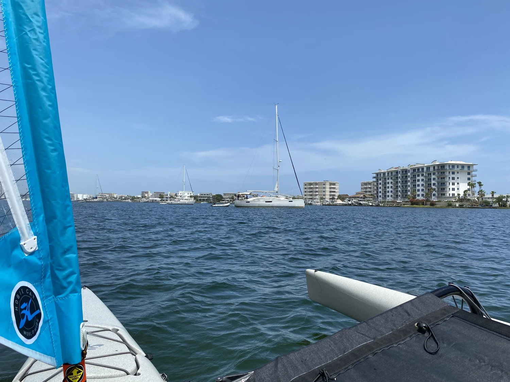
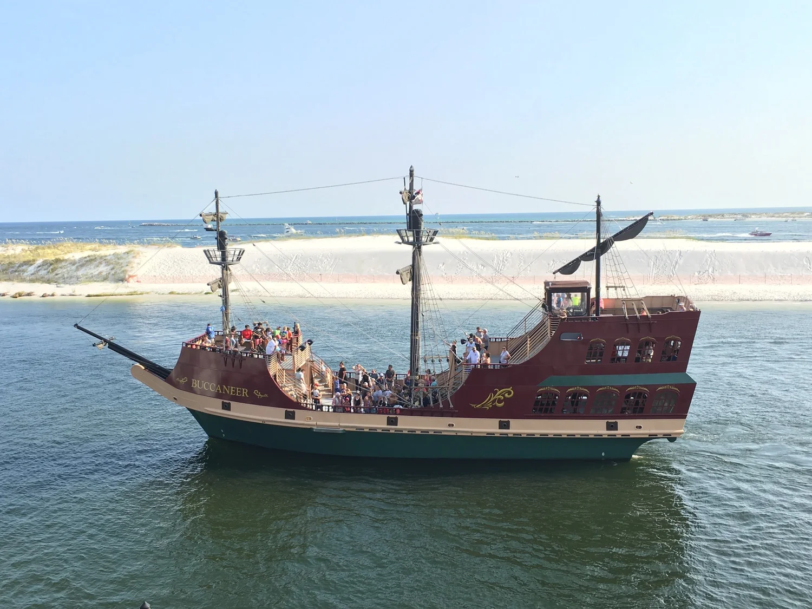
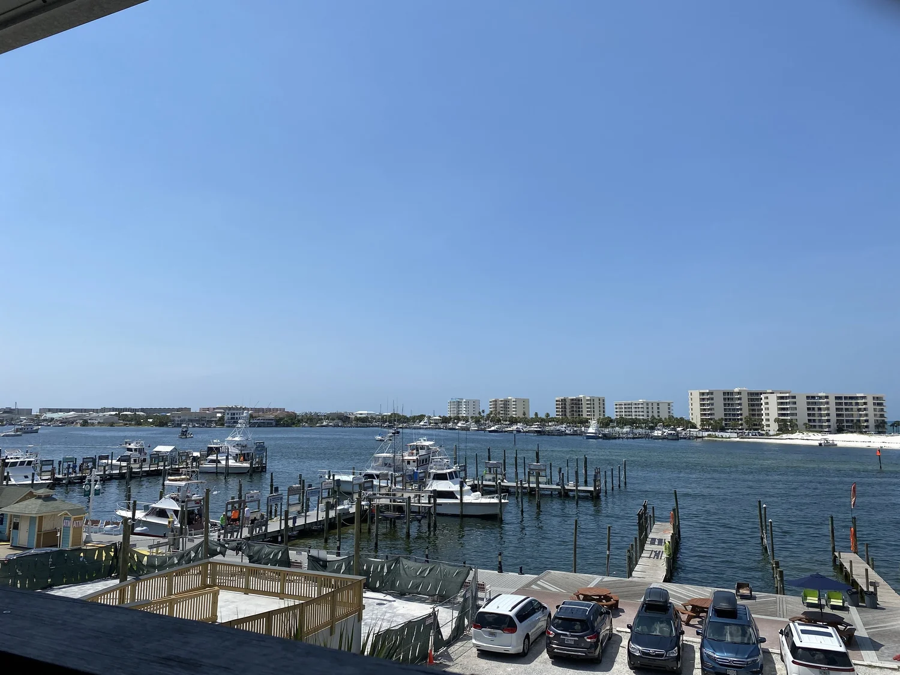

Sailing around Destin Harbor

Sailing in and out of Destin Harbor was a bit of a scary ride in our low riding Hobie Kayak sailboat.
 ▶ Watch on YouTube
▶ Watch on YouTubeSome of the chat is low so I’ve included subtitles for you to turn on your CC -Closed Captioning.
Watch the video or continue to read. (More detail below. More actual sailing on the video.) Feel free to view both and enjoy!
We’re seated only about six inches from the surface of the water!
Horns blaring, big boats backing up and pulling out, and narrow passages.
It was a busy area but beautiful and so fun!

There are many different things you can do here in the Destin, Florida Harbor and Harborwalk Village; even if you don’t have your own water ride. Numerous places to rent wave-runners and SUP boards. There are fishing tours, scuba and snorkel tours, dolphin tours, Crab Island tours, pontoon boats with slides, and just awesomeness of all kinds. There’s even a zipline and a pirate boat!
Sit back and enjoy!

Here’s our view from upstairs at Dewey Destin’s Harborside Seafood Restaurant where we ate lunch.
